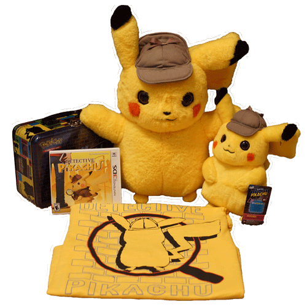

he is so cute! he is my favorite! i love him!
his little hat! his fuzzy cheeks! his coffee breath!
no pokemon can be more perfect than this lil guy
the hearts in my eyes appeared when the movie was first leaked on youtube
i have never seen such a cute yellow blob before. watch the whole thing.
i convinced my loving mother to take me to see it on mother's day in theaters! they didn't have the promo cards though. i was very sad
my imouto's friend saw it at a different theater that did have cards and she gave me hers ;A; thank u!!
every day every night i cannot stop thinking of detective pikachu
the tcg promo cards were in stores! i needed them! i bought a few packs!
i found out target had life size plushies! unfortunately there is no target near me
i sent imouto out on an important mission to procure a life size detecive. she came back with a build a bear pikachu instead
this mission was beyond her ability, so i had to take it into my own hands. i made her drive me to target (1 hour away from my moms house) and i grabbed the beautiful detective and tucked him safely into my arms! i was wandering through walmart as usual and found a detective shirt in the boys section. my mom reluctantly bought it for me
i arrived home from my mommy's house and ryan gave me a whole lunch box tin with my little detective on it
i am in love!!!
finally the day arrived, august 6th, 2019, the day detective pikachu came out on bluray! ryan sneakily bought it for me
i watched it twice that day! i was so happy~ i gave him the detecive card inside because we were only able to get one of the theater cards
please come over and watch it with me! it is my favorite movie
a few months later i was wandering through walmart (as usual) with ryan and found 3 little detecives on clearance. they were above my NEET budget so i left them, but ryan grabbed one anyway and bought it for me!
i now have almost all of the cards from the set! here are the ones i am missing:
when my little detective says "i smell what you're stepping in" GROSS!!!
there's too many im going to have to watch it again